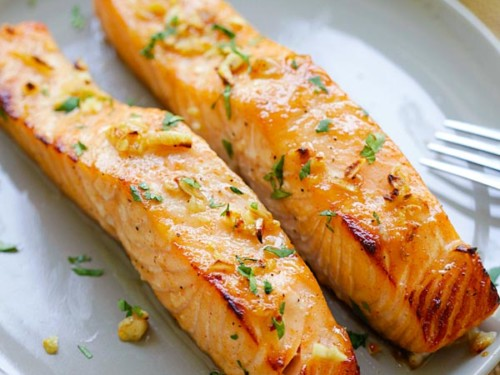

Baked Dijon Salmon

2 Delicious baked dijon salmon filets
Ingredients
- 1/4 cup butter, melted
- 3 tablespoons Dijon mustard
- 1 1/2 tablespoons honey
- 1/4 cup dry bread crumbs
- 1/4 cup finely chopped pecans
- 4 teapoons chopped fres parsley
- 4 fillets salmon
- salt and pepper to taste
- 1 lemon for garnish
Steps
- Preheat the oven to 400 degrees F (200 degrees C).
- Stir together butter, mustard, and honey in a small bowl. Set aside. Mix together bread crumbs, pecans, and parsley in another bowl.
- Brush each salmon fillet lightly with honey mustard mixture, and sprinkle the tops of fillets with bread crumb mixture.
- Bake salmon in the preheated oven until it flakes easily with a fork, 12 to 15 minutes. Season with salt and pepper, and garnish with a wedge of lemon.